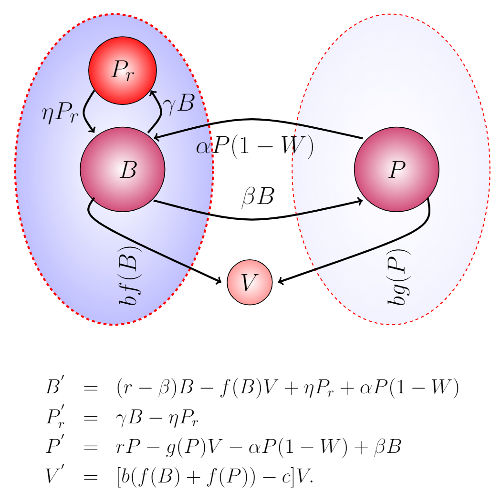

                       <!-- <div class="Research">-->
			<div class="blurb">
			<div class="profile-body">
			<div class="main-wrap">
				<style><!--
			body { font-family: Arial }
		 	hr { color: a6bf79} -->
			</style>

			<p><font size="6"><b>Research</b></font><br></p>
			<link rel="stylesheet" type="text/css" href="css/main.css">

			
			<button class="button button1"><font size="4">Mathematical Biology</button>
			<button class="button button1"><font size="4">Differential Equations</button>
			<button class="button button2"><font size="4">Bioinformatics</button>
			<button class="button button1"><font size="4">Dynamical Systems & Bifurcation Analysis</button>	
				
</body>
			<p style="text-align:justify;line-height:1"><font size="4"> Modern technological advancements have resulted in an avalanche of data on a wide range of biological phenomena. 
			These findings urge mathematical modellers to use complementary approaches from mathematical modelling and bioinformatics to tackle a wide 
			range of problems. The utilization of this available data in mathematical modeling of these problems will result in more informed models and
                        help in extracting more information.</p>
			

			
			<p style="text-align:justify;line-height:1"><font size="4">
			My research focuses on mathematical modelling of biological and health-related problems, notably the evolution of bacterial 
			genomes and its consequences. Currently, I am a Postdoctoral Fellow in <a href="https://www.dal.ca/faculty/computerscience/faculty-staff/robert-beiko.html" target="_blank"> Dr. Robert Beiko</a>'s
			Bioinformatics group at the Faculty of Computer Science at Dalhousie University, where I am working on the Genome Canada-funded project <a href="https://www.genomecanada.ca/en/antimicrobial-resistance-emergence-transmission-and-ecology-arete" target="_blank">
			Antimicrobial Resistance: Emergence, Transmission, and Ecology (ARETE)</a>.  In collaboration with experts from the <a href="https://www.canada.ca/en/public-health.html" target="_blank">Public Health Agency of Canada</a> 
			and <a href="https://www.agr.gc.ca/eng/agriculture-and-agri-food-canada/?id=1395690825741" target="_blank">Agriculture/Agri-Food Canada</a>, 
			I am developing mathematical models of antibiotic resistance spread in clinical, agricultural, and environmental settings.</p>
			
			<!--<br><font size="5"><b>The role of Mobile genetic elements (MGEs) in the maintenance and distribution of Antibiotic Resistance Genes (ARGs)</b></font><br>	
			<p style="text-align:justify;line-height:1"><font size="4"> The emergence and rapid spread of antimicrobial resistance (AMR) genes is a great concern, as widely
			used antibiotics are becoming less effective in the treatment of infectious diseases. Mobile genetic elements
			(MGEs), in the bacterial genomes, play a critical role in the spread of these AMR genes. Mobile
			genetic elements include plasmids, prophages, and integrative conjugative elements (ICEs), etc. Although
			extensively studied, the magnitude of their infuence remains unclear, and more mathematical modeling is
			essential to understanding their history and the future risks they pose. I am employing mathematical modeling
			and bioinformatics techniques to explore the role of these MGEs in the spread and maintenance of ARGs, study the evolution and gene repertoire of MGEs.</p>
						
			<br><font size="5"><b> The gut phageome:  The role of phages in the evolution of gut microbiome</b></font><br>
			<p style="text-align:justify;line-height:1"><font size="4"> 
			The microbiome is made up of both beneficial and potentially harmful microbes. These microbes
			have a huge influence on our health and well-being. Changes in the makeup of the microbiome have been linked to a variety of illnesses. In microbiome 
			research, the bacterial population has garnered the majority of the focus, but phages, the most important element responsible for altering the makeup of 
			the microbiome, have been neglected. Recent advancements in microbiome science have prompted researchers to focus on and emphasise the importance of 
			phages while addressing the microbiome. I am using mathematical modelling approaches to try to understand the dynamics of phages and bacteria. The goal is to learn 
			how the interaction of phages and bacteria alters the composition of the microbiome. </p>
			
			<p style="text-align:justify;line-height:1"><font size="4">I have also worked on Fermi-Pasta-Ulam  lattice dynamics and reaction-diffusion equations.</p>
                        -->				
                        <!--<div style="text-align: center;">				
				
				</div>-->
			<!--<h3> Pulications</p>-->
			<!--<div class="paragraph"><font color="#2a2a2a" size="3">-->
	<br><font size="5"><b>Publications</b></font><br>
	<p style="text-align:justify;line-height:1">
	<a href="https://journals.plos.org/ploscompbiol/article?id=10.1371/journal.pcbi.1008482" target="_blank">
	<strong> Evolution Along the parasitism-mutualism continuum determines the genetic repertoire of prophages.
	</strong></a><br />Amjad Khan, Alita R. Burmeister, Lindi M. Wahl.<em> PLoS Computational Biology,</em> 2020.
	</font><br /><br /><font color="#2a2a2a" size="4">
	<a href="https://www.sciencedirect.com/science/article/pii/S0040580919301844" target="_blank">
	<strong> Quantifying the forces that maintain prophages in bacterial genomes.
	</strong></a><br />Amjad Khan, Lindi M. Wahl.
	<em> Theoretical Population Biology,</em> 2020. 
	</font><br /><br /><font color="#2a2a2a" size="4">
	<a href="https://link.springer.com/chapter/10.1007%2F978-3-319-99719-3_34" target="_blank">
	<strong> Phage Therapy and Antibiotics for Biofilm Eradication: A Predictive Model.
	</strong></a><br />Amjad Khan, Lindi M. Wahl, Pei Yu.
	<em> Recent Advances in Mathematical and Statistical Methods,</em> AMMCS 2017. 
	</font><br /><br /><font color="#2a2a2a" size="4">
	<a href="https://arxiv.org/abs/1603.01289" target="_blank">
	<strong> Long-time stability of small FPU solitary waves.
	</strong></a><br />Amjad Khan, Dmitry Pelinovsky.<em> Discrete & Continuous Dynamical Systems,</em> 2017. 
	</font><br /><br /><font color="#2a2a2a" size="4">	
	</p>
	<font size="5"><b>Conferences & Workshops</b></font>
	<p style="text-align:justify;line-height:1">
	<a href="https://uwaterloo.ca/canadian-applied-industrial-math-society-annual-meeting-2021/" target="_blank">
	<strong> The role of temperate bacteriophages in the maintenance and distribution of Antibiotic Resistance Genes (ARGs).
	</strong></a><br />Amjad Khan, Lindi M. Wahl and Robert G Beiko.<em> Canadian Society of Applied and Industrial Mathematics (CAIMS 2021) </em> 
		June 21- 24, 2021 Virtual (hosted by the University of Waterloo, Waterloo, ON, Canada). 
	</font><br /><br /><font color="#2a2a2a" size="4">
				
	<a href="https://www.smb2021.org/" target="_blank">
	<strong> Modeling the transmission and loss of an important class of mobile genetic elements.
	</strong></a><br />Amjad Khan, Robert G Beiko.<em> Virtual annual Meeting and Conference of the Society for Mathematical Biology </em> SMB 2021 June 13 -17. 
	</font><br /><br /><font color="#2a2a2a" size="4">
				
	<a href="http://www.fields.utoronto.ca/activities/19-20/systems-modeling" target="_blank">
	<strong> Systems Modeling in the Pharmaceutical Industry - Problem Solving Workshop.
	</strong></a><br />Amjad Khan.<em> The Fields Institute, </em> Toronto, ON, Canada, 2019. 
	</font><br /><br /><font color="#2a2a2a" size="4">
	<a href="https://www.smb.org/" target="_blank">
	<strong> The Evolutionary Forces Acting on Prophages: A Mathematical Study.
	</strong></a><br />Amjad Khan, Lindi M. Wahl.<em> Annual Meeting and Conference of the Society for Mathematical Biology </em> SMB 2019 Annual Meeting at Montral, Qubec, Canada. 
	</font><br /><br /><font color="#2a2a2a" size="4">
	<a href="http://www.utoronto.ca/activities/19-20/systems-modeling" target="_blank">
	<strong> Blurring the Lines between Predator and Prey: The Evolution of Temperate Viruses.
	</strong></a><br />Amjad Khan, Lindi M. Wahl,  Pokhara, Nepal June 28, 2019.
	</font><br /><br /><font color="#2a2a2a" size="4">
	<a href="http://www.fields.utoronto.ca/talks/MATHEMATICAL-STUDY-ANTIBIOTIC-AND-PHAGE-THERAPIES-BACTERIAL-BIOFILM-COLONIES" target="_blank">
	<strong> Mathematical study of antibiotic and phage therapies in bacterial biofilm colonies.</a><br> 
	Workshop on the Role of Mathematics in Combatting Antibiotic Resistance and Developing Novel Antibacterials. 
	</strong><br />Amjad Khan, Lindi M. Wahl.<em> The Fields Institute, </em> Toronto, ON, Canada, 2018.
	</font><br /><br /><font color="#2a2a2a" size="4">
	<a href="https://caims.ca/" target="_blank">
	<strong> Mathematical Model of the Prophage Size Distribution in Bacterial Genomes.
	</strong></a><br />Amjad Khan, Lindi M. Wahl.<em> Canadian Society of Applied and Industrial Mathematics (CAIMS 2018), </em> Ryerson University, Toronto, Canada, 2019. 
	</font><br /><br /><font color="#2a2a2a" size="4">
	<a href="http://www.ammcs2017.wlu.ca/" target="_blank">
	<strong> Population dynamics of phages and biofilm bacteria.
	</strong></a><br />Amjad Khan, Lindi M. Wahl.<em> The IV AMMCS International Conference, </em> Waterloo, Ontario, Canada, 2017. 
	</font><br /><br /><font color="#2a2a2a" size="4">
	<a href="https://dmpeli.math.mcmaster.ca/ResearchProjects/presentations/presentation_khan.pdf" target="_blank">
	<strong> Approximations of the lattice dynamics.
	</strong></a><br />Amjad Khan, Dmitry Pelinovsky.<em> McMaster University, </em> Hamilton, Ontario, Canada, 2017. 
	</font><br /><br /><font color="#2a2a2a" size="4">
	</p>
	<p style="text-align:justify;line-height:1">
        <font size="5"><b>PhD Dissertation</b></font><br>
	<a href="https://ir.lib.uwo.ca/etd/6957/" target="_blank">
	<strong> Phage-Bacteria Interaction and Prophage Sequences in Bacterial Genomes.
	</strong></a><br />Amjad Khan.<em> Western University, </em> London, Ontario, Canada, 2020. 
	</font><br /><br /><font color="#2a2a2a" size="4">
	<font size="5"><b>Master Dissertation</b></font><br>
	<a href="https://macsphere.mcmaster.ca/handle/11375/17274" target="_blank">
	<strong> Approximations of the lattice dynamics.
	</strong></a><br />Amjad Khan.<em> McMaster University, </em> Hamilton, Ontario, Canada, 2015.
        </p style="text-align:justify;line-height:1">
	</div><!-- /.blurb -->
	</div><!-- /.container -->
	</div><!--/.profile-body -->
	</div><!--/.main-wrap -->
		
	</div>
